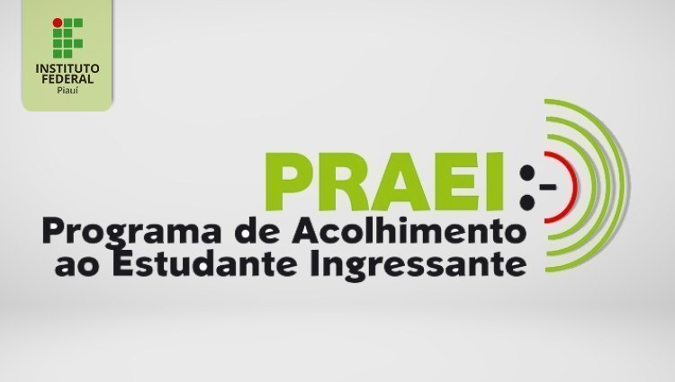

Últimas notícias
Eventos
OPALA TECH 2ª Edição
Fev 12
Foi lançado na ultima semana a 2ª edição do evento, que será realizado nos dias 05,06 e 07 de junho no campus de Pedro II.
Continuar leitura
Notícias
Campus Pedro II divulga resultado final para monitorias do PRAEI
Fev 15
O Campus Pedro II do Instituto Federal do Piauí (IFPI) publicou, nesta quinta-feira, 2...
Continuar leitura
Placeholder
Notícias
Campus Pedro II divulga terceira chamada do Vestibular 2023
Fev 28
O Campus Pedro II do IFPI publicou, hoje, 7, a terceira chamada do Vestibular 2023.
Continuar leitura
Notícias
Pedro II divulga parcial para curso de Meio Ambiente
Mar 02
O Campus Pedro II divulga o resultado parcial da chamada pública para o curso Técnico Integrado ao Médio em Meio Ambiente.
Continuar leitura